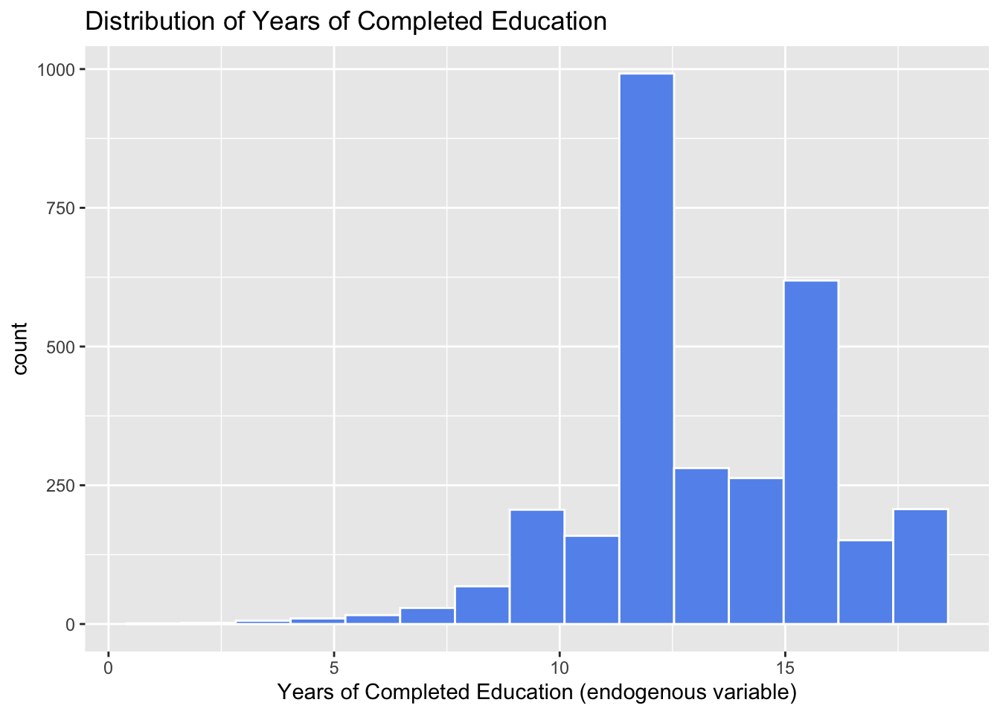
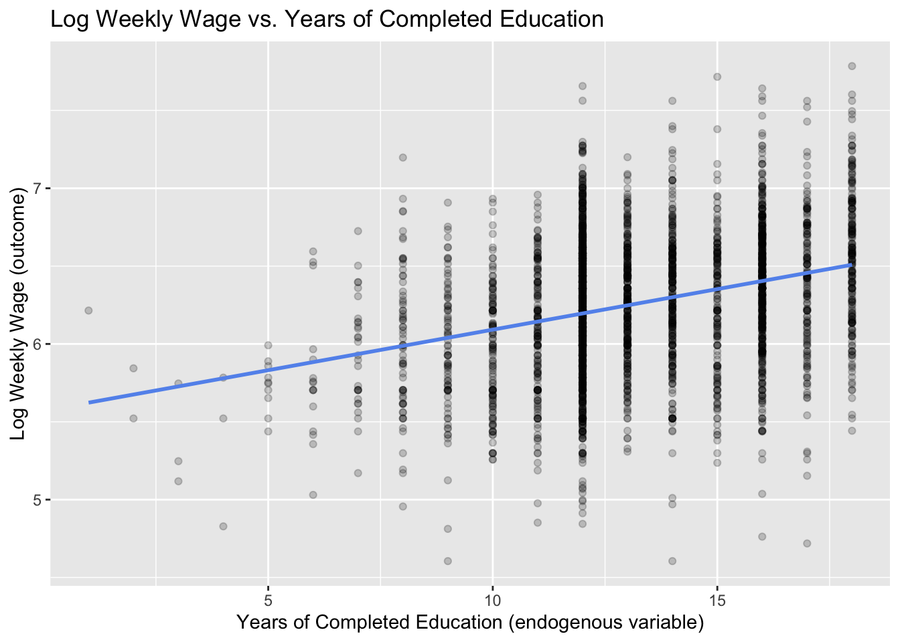

── Conflicts ────────────────────────────────────────── tidyverse_conflicts() ──
✖ dplyr::filter() masks stats::filter()
✖ dplyr::lag() masks stats::lag()
ℹ Use the conflicted package (<http://conflicted.r-lib.org/>) to force all conflicts to become errors
if (!require(estimatr)) install.packages("estimatr"); library(estimatr)
Loading required package: estimatr
if (!require(modelsummary)) install.packages("modelsummary"); library(modelsummary)
Loading required package: modelsummary
Warning: package 'modelsummary' was built under R version 4.5.2
card <-read_csv("Data/card1995.csv")
Rows: 3010 Columns: 16
── Column specification ────────────────────────────────────────────────────────
Delimiter: ","
dbl (16): wage, lwage, educ, nearc4, nearc2, black, smsa, south, exper, expe...
ℹ Use `spec()` to retrieve the full column specification for this data.
ℹ Specify the column types or set `show_col_types = FALSE` to quiet this message.
1.2 Describe the data
In the dataset there are 3010 observations. The unit of observations are individual workers.
#1.3ggplot(data = card, aes(x = educ))+geom_histogram(bins =15, color ="white", fill ="cornflowerblue") +labs(title ="Distribution of Years of Completed Education",x ="Years of Completed Education (endogenous variable)",y ="count")

mean(card$educ, na.rm =TRUE)
[1] 13.26346
1.3 Distribution of years of education
The mean is 13.263. Based on the histogram there appear to be large spikes at about 12 years of education and 16 years of education. Conceptually, it makes sense that there would be spikes here because 12 years of education is associated with completion of a high school degree, and 16 years would be consistent with completion of a bachelors degree. It makes sense that people would stop with education at these milestone points.
#1.4ggplot(data = card, aes(x=educ, y=lwage))+geom_point(alpha =0.2)+geom_smooth(method ="lm", se =FALSE, color ="cornflowerblue")+labs(title ="Log Weekly Wage vs. Years of Completed Education",x ="Years of Completed Education (endogenous variable)",y ="Log Weekly Wage (outcome)")
`geom_smooth()` using formula = 'y ~ x'

1.4 The naïve relationship
Based on this plot, more education does appear to be associated with higher wages as can be seen by the positive slope of our linear regression line.
1.5 Why OLS might be misleading
The OLS regression of lwage on educ might not give us the causal effect of education. One reason why people with more education might earn more even if education itself had no effect is because people with more education, may be those with more financial resources to go to school for longer, and these financial resources also allow them to have more more connections and better job opportunities via a higher earning network. Another reason why people with more education might earn more even if education itself has no effect, is if people who get more education are fundamentally those that have higher performance abilities. As a result, these people are also more systematically likely to do better at work, have better job, and have higher earnings.
2 The Instrument: College Proximity
mean(card$nearc4, na.rm=TRUE)
[1] 0.6820598
2.1 What the instrument measures
The variable nearc4 equals 1 if the respondent grew up near a 4-year college. The share of respondents in this sample that grew up near a 4-year college is 0.682 or about 68.2%.
#2.2first_stage <-lm_robust(educ ~ nearc4 + black + smsa + south + exper + expersq + married,data = card, se_type ="HC2")first_stage
Estimate Std. Error t value Pr(>|t|) CI Lower
(Intercept) 16.946910655 0.16094303 105.2975739 0.000000e+00 16.631340582
nearc4 0.327111413 0.08055446 4.0607488 5.016911e-05 0.169163750
black -0.945290863 0.08859855 -10.6693722 4.142485e-26 -1.119011027
smsa 0.423328089 0.08521067 4.9680176 7.143751e-07 0.256250732
south -0.300175660 0.07857125 -3.8204260 1.359266e-04 -0.454234747
exper -0.432445687 0.03238761 -13.3521954 1.519509e-39 -0.495949899
expersq 0.001409957 0.00170720 0.8258884 4.089332e-01 -0.001937447
married -0.074408252 0.01767034 -4.2109124 2.618347e-05 -0.109055482
CI Upper DF
(Intercept) 17.262480728 2995
nearc4 0.485059075 2995
black -0.771570699 2995
smsa 0.590405447 2995
south -0.146116572 2995
exper -0.368941476 2995
expersq 0.004757361 2995
married -0.039761021 2995
2.2 Relevance: does proximity affect education?
The coefficient on nearc4 is 0.327 and its standard error is 0.081. The t-statistic is 4.061. This indicates that living near a 4-year college at age 14 was on average associated with the completion of an additional 0.327 years of education holding constant being black, lived in a metropolitan area, lived in the South, potential labor market experience (years), experience squared, and married. The positive sign makes sense because if one lives near a college as a child they likely experienced a reduced cost of education meaning it is easier and cheaper for them to go to college.
F <-4.0607488^2F
[1] 16.48968
2.3 Checking instrument strength
The t-statistic on nearc4 from the first-stage regression was 4.061. The first-stage F-statistic is 16.490. Our instrument is strong because 16.49 > 10. Instrument strength matters for the reliability of the 2SLS estimate because the point of including instrumental vairables is to establish a causal relationship and if you include a weak instrument it leaves a lot of room for variability, imprecision and bias.
2.4 Exclusion restriction
The second condition for a valid instrument is the exclusion restriction: college proximity must affect wages only through its effect on education — not through any other channel. (a) The exclusion restriction in this example is that it must be true that once we control for education, nearc4 must only affect lwage through its affect on educ. (b) One way the exclusion restriction might be violated is that areas around colleges may systematically differ in terms of racial segregation or racial profiling. In this case, employers around colleges may differ in hiring discrimination than in other areas. Perhaps near these areas employers discriminate less throughout the hiring process, so if you are a person of color and live in this area you may have other wages than those that do no live near colleges.
The groups do not appear to be balanced. If we look at the table there appear to be slightly less black people that lived near colleges, there appear to be a substantial amount more people that lived in a metropolitan area that lived near colleges, and there appear to be less people that lived in the south that lived near colleges. These imbalances tell us that there may be a lot of outside variables affecting wage. In our study black, smsa, and south are not randomly assigned and nearc4 is likely not as good as randomly assigned so exogeneity could be a threat to the validity of the instrument.
3 The Wald Estimator
#3.1reduced_form <-lm_robust(lwage ~ nearc4 + black + smsa + south + exper + expersq + married,data = card, se_type ="HC2")reduced_form
Estimate Std. Error t value Pr(>|t|) CI Lower
(Intercept) 6.104783907 0.0369399692 165.262290 0.000000e+00 6.032353626
nearc4 0.040854001 0.0160992779 2.537629 1.121090e-02 0.009287240
black -0.236173434 0.0183381490 -12.878804 5.575495e-37 -0.272130077
smsa 0.196878652 0.0166562312 11.820120 1.526619e-31 0.164219841
south -0.146503379 0.0163740318 -8.947300 6.243086e-19 -0.178608866
exper 0.040915614 0.0067799803 6.034769 1.787335e-09 0.027621724
expersq -0.001789075 0.0003227884 -5.542562 3.239634e-08 -0.002421984
married -0.038825630 0.0038391643 -10.113042 1.154798e-23 -0.046353296
CI Upper DF
(Intercept) 6.177214187 2995
nearc4 0.072420763 2995
black -0.200216791 2995
smsa 0.229537464 2995
south -0.114397892 2995
exper 0.054209503 2995
expersq -0.001156165 2995
married -0.031297964 2995
3.1 Compute the reduced form
The coefficient on nearc4 is 0.041. This tells us that those that living near a college is on average associated with approximately a 4.1% increase in wages, holding constant being black, lived in a metropolitan area, lived in the South, potential labor market experience (years), experience squared, and married.
(b) Card (1995) interprets the finding that 2SLS > OLS as evidence of downward bias in OLS. One thing that could cause OLS to underestimate the return to education is measurement error. If we think about educ, it is an endogenous variable that measures years of completed education. If in fact this variable is measured incorrectly, it could indicate that education has a greater effect on wage than the model expected, this is attenuation bias.
(c) I believe the estimate from the 2SLS is more credible as a causal estimate of the effect of education on wages. This is because the OLS estimate is at risk of the omitted variable bias, as the included variables are all at the subjective disgression of the person running the model. With 2SLS, the model is able to use only variation in education due to the near college instrumental variable.
#4.5ols_iq <-lm_robust(lwage ~ educ + IQ + black + smsa + south + exper + expersq + married,data = card, se_type ="HC2")ols_iq
Estimate Std. Error t value Pr(>|t|) CI Lower
(Intercept) 4.624820266 0.1106111619 41.811515 7.250324e-277 4.407898361
educ 0.067568681 0.0050672360 13.334426 5.821735e-39 0.057631216
IQ 0.002500262 0.0007491806 3.337329 8.609879e-04 0.001031028
black -0.120030879 0.0270219343 -4.441980 9.387896e-06 -0.173024170
smsa 0.162782345 0.0184132040 8.840522 2.006318e-18 0.126671818
south -0.083180925 0.0183563649 -4.531449 6.195149e-06 -0.119179983
exper 0.083230844 0.0092631008 8.985203 5.709939e-19 0.065064780
expersq -0.002350153 0.0004642726 -5.062012 4.518801e-07 -0.003260648
married -0.029240623 0.0044083448 -6.633016 4.194221e-11 -0.037885922
CI Upper DF
(Intercept) 4.841742172 2051
educ 0.077506145 2051
IQ 0.003969496 2051
black -0.067037588 2051
smsa 0.198892871 2051
south -0.047181867 2051
exper 0.101396909 2051
expersq -0.001439659 2051
married -0.020595324 2051
twosls_iq <-iv_robust(lwage ~ educ + IQ + black + smsa + south + exper + expersq + married | nearc4 + IQ + black + smsa + south + exper + expersq + married, data = card, se_type ="HC2")twosls_iq
Estimate Std. Error t value Pr(>|t|) CI Lower
(Intercept) 4.1254833454 0.8039381042 5.1315932 3.143855e-07 2.548863208
educ 0.1093899302 0.0669607951 1.6336414 1.024876e-01 -0.021928311
IQ 0.0004228523 0.0034135214 0.1238757 9.014258e-01 -0.006271477
black -0.1233784512 0.0280423967 -4.3997114 1.139525e-05 -0.178372993
smsa 0.1536399386 0.0239013796 6.4280783 1.602608e-10 0.106766434
south -0.0857686314 0.0190205986 -4.5092498 6.872948e-06 -0.123070332
exper 0.1035065280 0.0339813212 3.0459830 2.348745e-03 0.036865035
expersq -0.0027889965 0.0008630306 -3.2316312 1.250362e-03 -0.004481504
married -0.0274086703 0.0053001348 -5.1713157 2.550570e-07 -0.037802878
CI Upper DF
(Intercept) 5.702103483 2051
educ 0.240708171 2051
IQ 0.007117182 2051
black -0.068383910 2051
smsa 0.200513443 2051
south -0.048466930 2051
exper 0.170148021 2051
expersq -0.001096489 2051
married -0.017014463 2051
0.125-0.109
[1] 0.016
4.5 Adding IQ as a control
(a) Including IQ changes the OLS coefficient on educ by decreasing it to 0.068 from 0.071.
(b) The 2SLS estimate decreases to 0.109 from 0.125 or by 0.016. It changes a bit but not extremely susbtantially with 0.016 being a relatively smaller value.
(c) These comparisons between part (a) and part (b) suggest that IQ is one source of bias that impacts the model as it causes both the OLS and 2SLS estimates to decrease. However, the OLS and 2SLS estimates still remain relatively different indicating there are other reasonings why the IV estimate is greater than OLS. it is also interesting to note that OLS changes more than the 2SLS which makes sense given that the IV would likely eliminate some of the OVB in the 2SLS that the OLS does not account for.
5 Interpretation and LATE
5.1 Who are the compliers? In this context, the compliers are individuals who would not have otherwise gone to college but decided to go to college because they happened to grow up near a 4-year college. For instance, these could be people that living near a college allowed for the costs associated with going to college to be cheaper so they could go to a college because they lived near it.
5.2 Write the LATE interpretation
Write a single careful sentence interpreting the 2SLS coefficient as a LATE. Your sentence should specify:
The causal effect of an additional year of schooling on wages is about a 12.5% increase in expected wage for those individuals whose educational attainment increased because they lived near a college, identified by variation in nearc4, as living near a college decreases the cost of attending univeristy thereby changing education.
5.3 External validity
Card finds a 2SLS estimate around 12–13% return to each additional year of education. In this case, the LATE is likely not going to be the same as the ATE (the return for the average person in the sample). This is because the compliers, the men who went to more school because they happened to live near a college, are likely to have higher returns to education than the typical person. When we think about these compliers, they likely are more economically disadvantaged and would not have had the opportunity to get increased schooling. However, because of where they live, they were able to acquire more education, and probably experience more gains from an additional year of schooling than the average person. This is because this additional schooling for compliers could open up all sorts of doors for the compliers that they would not of otherwise have had access too with their financial backgrounds, but the average person might have had more access to. As a result, the LATE is probably bigger than the ATE which makes sense considering the IV estimate is larger than the ols one.